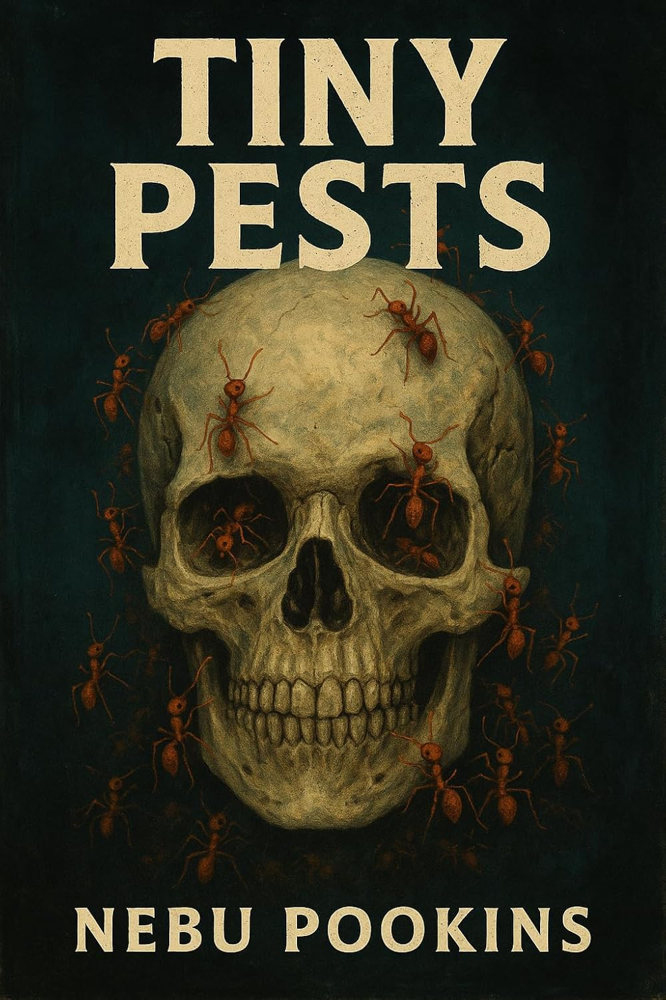

Hi.
My name is Nebu Pookins.
This is my personal landing page.
Go right to move onto the next topic, or go down to delve deeper into the current topic.
Here are the main things currently going on in my life right now:
I stream on Twitch.
Here's my channel trailer:
I also post clips on
I post my streaming schedule on:
I don't remember when I started streaming, but it's been since at least 2018-May-07 on Twitch, when I streamed Battletech.
Oldest Let's Play (not live) I can find is 2011-Jul-09, where I had Steph cohost Spelunky with me.
I got invited to the Twitch Affiliate program on 2018-Nov-25.
Every cent I earn from Twitch, I donate to the Against Malaria Foundation.
In total, we've provided mosquito nets to over 4300 people.
I'm a "classically trained" Software Development Engineer with professional experience starting in 2004.
My GitHub username is NebuPookins.
By "classically trained", I mean I earned a Bachelor of Computer Science from McGill University before LLMs were a thing.
I've worked at various small companies you've probably never heard of (fewer than 20 employees), and at Amazon.
I write non-fiction essays on my Substack.
I tend to write about:
Sometimes these topics come up during my Twitch streams, especially when I have Steph as a cohost.
Often she'll talk about neuropsychology or I'll bring up quantum physics and relativity.
These discussions are sometimes clipped and posted on YouTube, TikTok and Instagram.
I wrote a scifi horror story.
